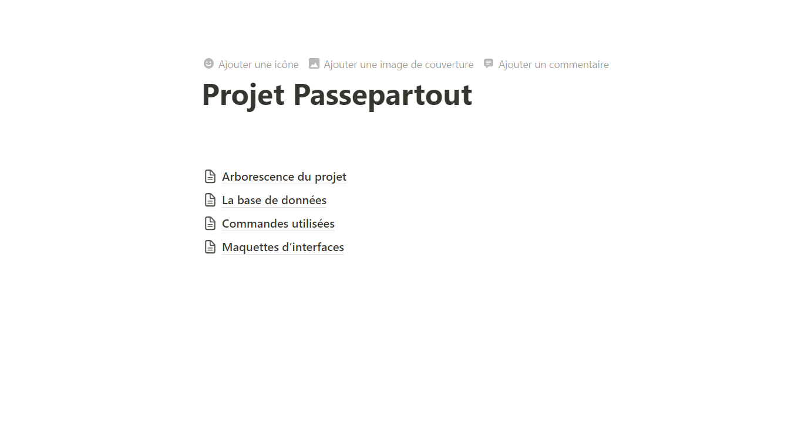

application web GSB gestion de fiche de frais
Création d'une application web de remboursement de fiches de frais, par groupe de 3.
langages et apllication utilisées : HTML, CSS, JavaScript, PHP, MySQL, vscode
Afficher plus de détails
context :
Dans l’entreprise GSB, le suivi des frais est souhaité être fait via une application web. cette application doit permetre au visiteur de saisir une fiche de frais forfait ou hors fofrafit, un comptable doit pouvoir y accès et les validé ou pas, puis un compte administrateur qui géra les mots de passe et la création de nouveau utilisateur
réalisation
nous avons choisie de créer notre application en php natif, d'utilisé du html, css, javascript, ...
nous avions une rêgle de gestion a respecté, le mois ne se termine le 25.
outil utilisés:
compétence dévelloper:
travailer en mode projet
Répondre aux incidents et aux demandes d’assistance et d’évolution
mettre à disposition des utilisateurs un service informatique
Organiser son développement professionnel
Fermer la boîte de dialogue
Application mobile de gestion de culture
Création d'une application Mobile pour une gestionn des cultures
langages et apllication android studio, java, SQLlite
Afficher plus de détails
context :
La Chambre d’Agriculture du Pas-de-Calais nous demande une aplication mobile pour des technicien qui vons visité des exploitation pour noter la surface de celle-ci mais également la surface des parcelles, car uune exploitation est séparer en plusieurs parcelles et les agriulteur touche des aides en fonction des parcelle
réalisation
nous étions en solitaire pour la réalisation de ce projet
nous avions une rêgle de gestion a respecté, une année se termine pas le 31 décembre mais en juillet, et les données seront sauvegarder que temporairemnt en local, avant qu'elle soit envoyer au server par fichier json ou xml
outil utilisés:
compétence dévelloper:
travailer en mode projet
Répondre aux incidents et aux demandes d’assistance et d’évolution
mettre à disposition des utilisateurs un service informatique
Organiser son développement professionnel
Fermer la boîte de dialogue
Passe partout
Création d'une application web pour une gestion des clés
langages et apllication utilisé : python
Afficher plus de détails
context :
Le lycée avait besoin d'une application web qui permetrait la gestion des clefs
réalisation
nous étions un groupe de 3 pour réalisé ce projet
on a décidé de choissir le python, un langage informatique assez polyvalent qui peut être utilisé pour le web comme pour l'android
outil utilisés:
nous avons réalisé également une documentation avec notion, un exemple est dessous

compétence dévelloper:
travailer en mode projet
Répondre aux incidents et aux demandes d’assistance et d’évolution
mettre à disposition des utilisateurs un service informatique
Organiser son développement professionnel
Fermer la boîte de dialogue